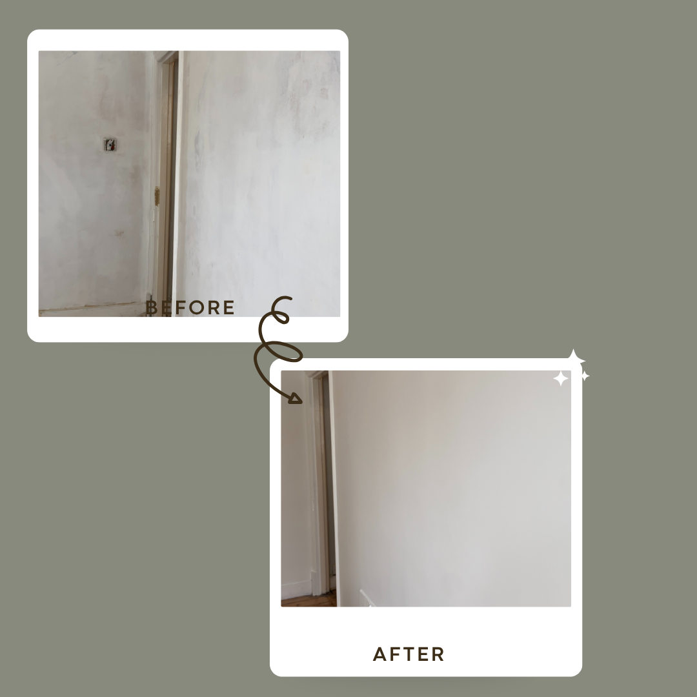

Remove rough areas
Previous repairs, old coatings and rough patches can leave uneven areas on a wall. Appropriate sanding can help level these areas before painting.
A smooth painted finish starts with the surface underneath. Learn how sanding, filling and careful preparation can make a difference before the first coat of paint is applied.
Painting is only one part of achieving a clean finish. The condition of the surface underneath can have a major effect on how the finished wall looks.
Previous paint, filler repairs, small holes, rough areas, old coatings and uneven surfaces may all need different levels of preparation before decorative paint is applied. EveroDecor assesses the surface and uses an appropriate combination of filling, sanding, smoothing and priming where required.
Sanding is not simply about making a wall feel smooth. It is part of preparing the surface for the next stage of decoration.
Previous repairs, old coatings and rough patches can leave uneven areas on a wall. Appropriate sanding can help level these areas before painting.
Filler can be used to repair suitable small holes, gaps and imperfections. Once dry, the repaired area can be sanded so that it transitions more smoothly into the surrounding surface.
A freshly painted surface can reveal imperfections that were less obvious before painting, particularly under strong natural or artificial lighting.
The preparation required depends on the paint, existing coating and condition of the substrate. Sanding may form part of the preparation before primer or decorative coats.
Different areas can benefit from different sanding methods. The objective is controlled surface preparation rather than simply removing as much material as possible.
Manual sanding gives good control over smaller areas and detailed work. It can be useful around corners, edges, repairs and areas where a powered tool would be unnecessary.
A small orbital sanding machine can be useful on suitable larger areas where a more consistent sanding action is appropriate. The machine is used according to the surface and the preparation required.
There is no single sandpaper grade that is ideal for every surface and every stage of preparation. The appropriate grade depends on the existing coating, filler, substrate and condition of the surface.
| Stage | Typical purpose | What is being achieved? |
|---|---|---|
| Coarser sanding | Initial smoothing and removal of rough areas. | Reduce noticeable imperfections and prepare the area for further refinement. |
| Medium sanding | Refining the surface after initial preparation. | Smooth transitions and reduce visible sanding marks. |
| Fine sanding | Final surface refinement. | Produce a smoother surface before the next coating stage. |
| Final inspection | Check the prepared surface under suitable lighting. | Identify remaining imperfections before painting. |
The exact sanding grade should be selected according to the surface and the work being carried out rather than following a fixed sequence for every project.
Sanding alone cannot repair a hole or gap. Where suitable, filling can be used first and the repaired area can then be sanded once the filler has dried.
For appropriate small interior repairs, EveroDecor can use white interior filler to fill minor holes, gaps and surface imperfections before sanding and decorating.
Identify the imperfection → apply suitable filler → allow it to dry → sand the repair → inspect the surface → prime where required → apply the decorative coating.
Look at the existing surface, previous coatings, repairs and imperfections.
Suitable small holes and imperfections can be filled before the repaired areas are sanded.
Manual or orbital sanding and different grades can be used according to the surface.
Once the surface is appropriately prepared, primer and decorative coatings can be applied where required.
Replace these photographs with your own sanding, filling and preparation photographs. Close-up images are particularly valuable for demonstrating this type of work.
.jpeg)

Different decorative finishes can have different visual characteristics and practical requirements. Preparation should therefore consider what will be applied afterwards.
A low-sheen finish commonly used on walls and ceilings. Surface preparation remains important because uneven areas can still be visible under certain lighting.
Washable and durable wall paints can be useful in areas where surfaces need to cope with everyday marks and cleaning.
A common choice for suitable interior woodwork, including doors, skirting and frames, where a durable, subtly reflective finish is desired.
A higher-sheen finish often used on suitable woodwork. Preparation and sanding can be particularly important because higher sheen can highlight surface imperfections.
The preparation is considered according to the condition of the existing surface rather than treating every wall in exactly the same way.
EveroDecor works with different paint brands, colours and finishes and considers the intended use of the room when discussing the specification.
The quotation can clarify which surfaces, preparation, coats and materials are included before the work starts.
Not every wall needs extensive sanding. The amount of preparation depends on the existing surface, previous paint, repairs, texture and the finish required.
The appropriate grade depends on the surface and the stage of preparation. A coarser grade may be appropriate for initial smoothing, followed by finer sanding as the surface is refined.
EveroDecor can use manual sanding or a small orbital sanding machine depending on the surface, area and preparation required.
Where appropriate, small holes, gaps and surface imperfections can be filled before the repaired area is allowed to dry and then sanded smooth.
Yes. Sanding and surface preparation can form part of a wider interior painting project.
Suitable interior woodwork can require preparation and sanding before primer and finishing coats are applied. The preparation depends on the existing coating and condition.
EveroDecor is particularly focused on West London, including Hammersmith, Shepherd's Bush, Chiswick, Ealing, Acton, Fulham and Kensington. Larger London projects can be discussed depending on the job.
Send a few photographs of the walls, woodwork or areas that need preparation. Tell us what you would like to paint and we can discuss the preparation and finish required.